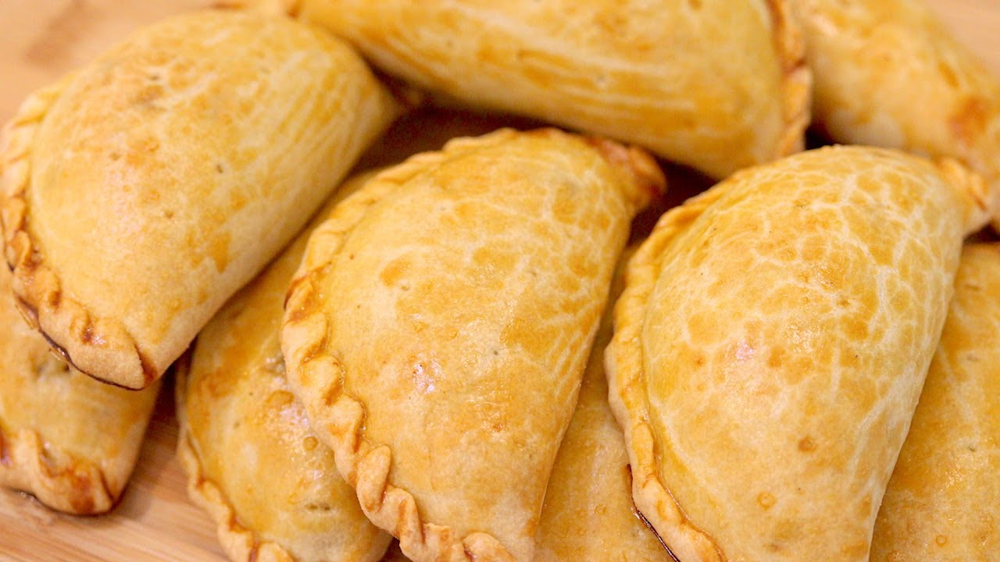

Receita de Pastel Assado
Ingredientes:

2 xícaras de farinha de trigo
1 e 1/2 colher (chá) de sal
1/2 lata de creme de leite (sem o soro)
Recheio a gosto
1 colher (café) de fermento químico
3 colheres (sopa) rasas de manteiga
1 gema para pincelar
Modo de Preparo:
- Misture a farinha, o fermento e o sal.
- Em seguida acrescente os outros ingredientes mexendo até formar uma massa homogênea.
- Abrir a massa, cortar com um pires ou potinho de sobremesa, rechear, fechar e apertar as beiradas com um garfo
- Pincelar os pastéis com a gema e levar para assar, forno 180º graus.
- Até dourar (uns 30 minutos, a partir da segunda bandeja vai mais rápido).
- Obs: Para a massa ficar mais crocante, deixe na geladeira por 30 minutos antes de abri-la.